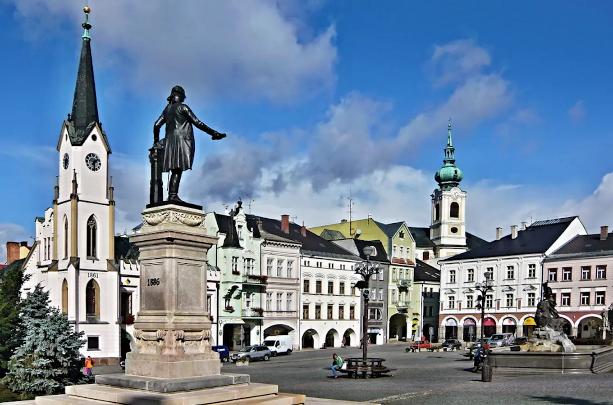
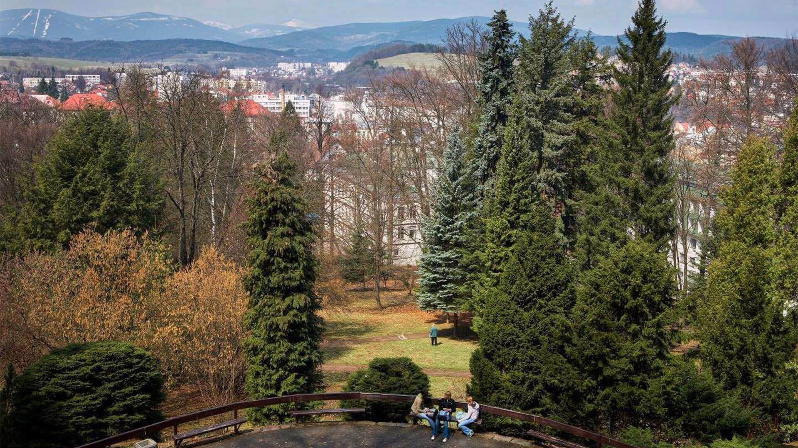
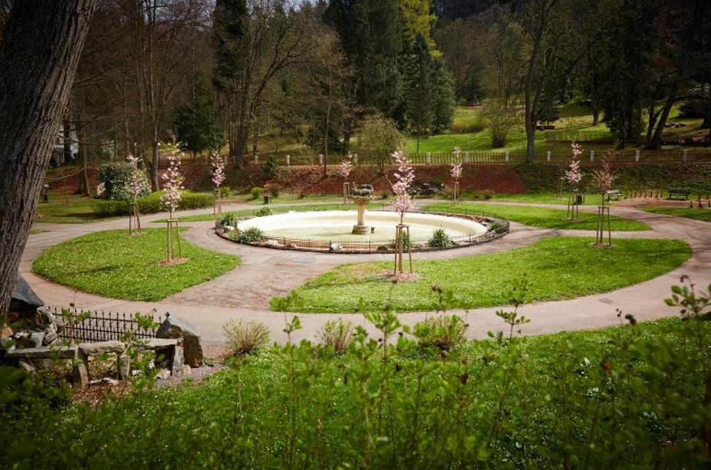

Historické náměstí
Dobré místo pro začátek procházky městem.
Základní výběr míst podle historie, výhledů a klidnějších zastávek.

Dobré místo pro začátek procházky městem.

Krátká cesta s výhledem na město.

Klidné místo na pauzu a odpočinek.